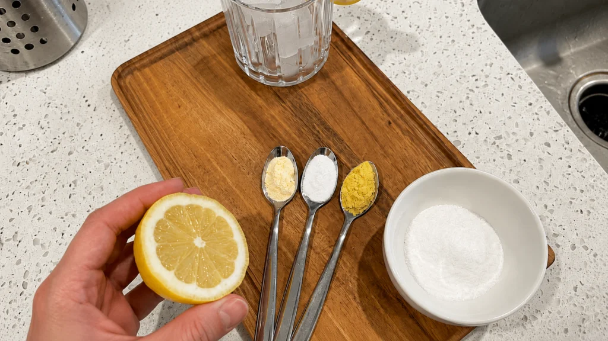

Many women in the wellness community are now talking about how they're approaching weight loss differently — without injections, extreme diets, or invasive procedures.
Some say their secret is a simple morning habit involving common kitchen ingredients — a routine that's been quietly shared in certain circles for years.
But is there really something to it?
And more importantly… could this simple morning recipe help explain why so many women over 40 are starting to feel more comfortable in their bodies again — without restrictive routines?
That's what we set out to learn more about.
Over recent months, this so-called "Baking Soda Trick" has been gaining attention online, especially among women who say it has helped them feel more energetic, less bloated, and more in tune with their bodies.
The interest grew even more after Dr. Anja, an obesity researcher, shared her insights in a recent televised health segment alongside Jennifer Mitchell, a mother of three who has been openly sharing her own wellness journey.
During the conversation, they discussed the step-by-step routine that many women are now exploring — a simple morning ritual that's becoming part of their daily self-care, helping them feel more confident in their own skin again.
During the interview, Dr. Anja shocked the audience by stating:
Sharyn: Good evening, Dr. Anja, Jennifer — thank you both for being here. This week, we received many messages from viewers asking about posts they've seen online discussing this so-called "Baking Soda Trick." Is there something real behind it, or is it just another trend?
Dr. Anja: Most people have heard of GLP-1 and GIP — hormones that have been receiving a lot of attention in recent years. What many don't realize is that the body actually produces these naturally. The question some researchers are exploring is whether certain habits may help support this natural process.
For years, I've been studying how simple daily routines may help support overall wellness — and lately, I've been having interesting conversations with patients about how something as common as baking soda can become part of a balanced morning ritual.
And Jennifer here has been a wonderful example of how being consistent with healthy habits can make someone feel completely different.
Sharyn: That's wonderful, Jennifer — could you tell us a bit about your experience and what the process has been like?
Jennifer Mitchell: Honestly, I was skeptical at first. I'd tried so many things over the years — different diets, popular trends — and nothing really felt right.
But this routine felt different. It's simple, it's part of my mornings now, and I genuinely started feeling better in my own body — even after three pregnancies.
Sharyn: Can any woman try this at home — and have a similar experience?
Dr. Anja: You probably have at least one of these ingredients in your kitchen already.
Many women say they begin noticing how they feel — more energetic, less bloated, more comfortable in their clothes — once they incorporate this kind of simple morning ritual into their routine.
I use a version of this myself in the mornings. It's become part of how I take care of my own body.
I put together a short educational video explaining the routine — the ingredients, the simple ratio, and the best time of day to do it.
Watch the 5-minute video bellow